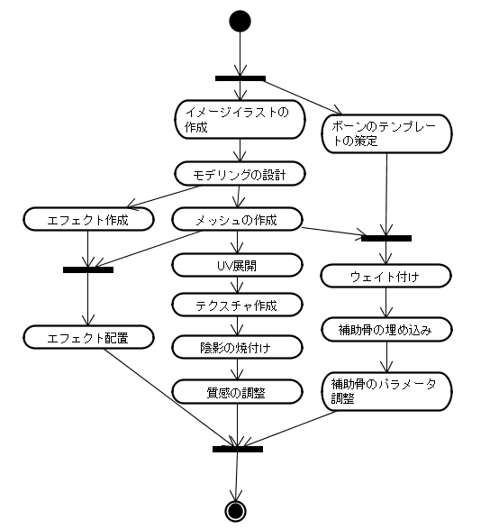

長久さんや三宅さんがやっている「ゲームAI連続セミナー」 の第６回に行ってみました。
今回のテーマは、進化です。
今回は、三宅さんの講演とグループワークと星野瑠美子さんによるライトシンセサイザNeonの紹介やその他、盛りだくさんの構成でした。
基本的にセミナー中にメモったものを起こし直したので、 聞き漏らしたり、勘違いしているところがあると思います。すいません。
ケベックの「モントリオール・インターナショナル・ゲーム・サミット」のキーノートでSporeの人が「次世代技術はAIだ」と断言していた。
手間がかかっているところを見つけて、自動化できるか考えよう
自分のニーズに合致しているか気にしながら三宅さんの話を聞こう
らき☆すたみてた。
毎日同じ世界は退屈
現実世界は、どんなものも同じでないように見える。
ゲーム世界は、十分に変化できる力を持っているか？
昔のゲームは、同じだからこそ「やりこみ」があった
最近のゲームは、変化することによる新しい出会い
ここ最近の流れ
オンラインゲームの拡大
コンテンツ配信が可能
あきさせないゲーム作りが可能
ユーザークリエイトコンテンツ
オフラインでも、動的な生成が可能
→プロシージャル（計算によってがーっと作る）
計算による連続した操作
ゲームでは、自立的な要素として捕らえられる（自動生成）
設定した状況以上の変化
farbrausch のデモ
64KB
メモリには、53MBのデータを生成（圧縮ではない）
「コンテンツはデータではなく生成できるもの」
大きなゲームもプロシージャルに作れればデータ用を押さえて作れるんじゃね？
現実世界とデジタルの世界をつなぐ
まだゲームに再現されていない分野がプロシージャルではないか？
ＣＧ，物理、ＡＩと並ぶ程度の規模
例１：コンテンツ生成
モデルの自動生成
木の生成
例２：ＡＩ
沢山の計算で周囲の行動を解析して行動を決定
Killzone (way pointでリアルタイムに敵の状況に対応)
プロシージャルで、どこまでコンテンツが変わっていくのか？変えていくのか？
全てがプロシージャルなゲームは難しい
次世代は固定したコンテンツ＋デザインによる部分的な導入
どこまでいけるかはまだ判明していない。
デジタルゲームの可能性の広がりを模索していくべき
企画の力が大事
ゲーム制作理論、ゲームテクノロジーが拡張していけないか？
プロシージャルコンテンツ
究極には地球シミュレーター
大切なこと
多様性：バリエーション
意外性：驚き
クオリティ：ゲーム性にあった質
計算づくで生成したものとはクオリティは下がる
ただし、改良によって近いものには持っていける
例１：ダンジョンの自動生成
ローグライクゲーム：1980-
最近は、MMOに組み込まれつつある（レベル差の解消）
覚えゲーにならない
手法
迷路：棒倒し法、穴掘り法、壁伸ばし法 etc.
ダンジョン：部屋を仕切って小部屋を作ってそれらをつなぐ
ゲーム性に応じた方法：部分的、条件をつけて、３Ｄダンジョン
研究者は行わない分野
意義：プロシージャルをゲーム性に組み込むことの典型例
他の分野では、まだこのような典型例はない
例２：グラフィックス
フラクタル：1975-
大きい岩も小さな岩も大体同じように見える
自然界のパターンは同じ模様がスケールを変えて出てくる
「逆に、同じ模様をスケールを変えて重ねれば自然のオブジェクトに見えるはず」
例：地形の自動生成
中点変位法、さらにボロノイ図を重ねるとか
terragen:映画の風景画像生成にも使用
Darwinia:グラフィッカーがいなくてもボリュームのあるゲームを作った（2006Independent game festival 大賞）
開発者に興味をもたれた（開発コストの低減）
ゲーム開発体制の試金石
AoE3:毎回同じ地形だとゲーム性が限定されるために
例：植物自動生成
L-system:1968-
文法の規則を重ねることで命令の生成を重ねる
複雑な木の生成
ダンジョン生成
街の生成
それ以外にも多くの手法が提案されている
大切なこと
１つのプロシージャル技術は１つの用途だけでなく、色々な応用ができる。
例：雲の自動生成
テクスチャ生成
パリンノイズで値に応じて色を変える
３Ｄモデルの生成
負荷が高い
球の密度分布の塊を作って重ね合わせる
ゲームの応用例はまだない
今までは、ビルボードとか
例３：ＡＩ
ナビゲーションメッシュ：クロムハウンズとか
最大80000メッシュなので、手で作るのは難しい
あたりモデルから作成
ポリゴンを減らして欲しくない部分の指定などの調整
例４：アニメーション
遺伝的アルゴリズムから生成:1980-
Oblivion:森のモデル。SpeedTreeで木のモデリング
葉のゆれまで、天候の変化にも対応
Crysis:Procedual Vertex Animation ３角関数で波を動かす
全体の動きと葉の動きを制御
例５：会話、自然言語生成
一筋縄ではいかない分野：やりたいと思っているがうまくいっていない
日本が強い分野
くまうた
どこいつ：言った言葉に応じてメッセージが変化
ユーザーの入力に対してオンリーワンの応答をしてくれる
自分だけのストーリー
シーマン
Facade：ゲームとしてはびみょ～
部屋の中で自動的に演技をする
ドアがノックされたので、迎えに行け！
自然言語を入力としたゴールシステム
サッカーゲームによく使われる
プロシージャルとしては手間をかけすぎ
シナリオを書いたほうが早いんじゃないの？
日本の企画力で何かやって欲しい
実は、今までのセミナーで色々と使われてきた。
実例
KillZone
みはらしのデータを埋め込んでおき、判断をプロシージャル生成
Chromehounds
プランをプロシージャルに生成
Farcry
FSM+ゴール指向システム：行動をプロシージャルに組み立て
ただし、それだけでは不十分
Farcry:アンカーシステム
レベルデザイナがスクリプトで直接的にイベント制御
Lua によるスクリプティング制御
世界中から自動生成野郎を集めている
生物、建物、惑星などの主要なものはすべてユーザーが生成可能
単細胞フェーズ
集団行動フェーズ
キャラクティックフェーズ
モデル生成
「リゴブロック」のパーツの組み合わせ
テクスチャ生成
自動＋パターン指定
地形生成
もともと地形生成やってた人が担当
ブラシで凹凸をつけられる
高さマップ、デカールテクスチャの半自動生成
植生の自動生成
ハルトンシークエンス法（素数からランダムな分布を求める）
それらを座標として使用
アニメーション
スケルトンドリブンアニメーション
骨を動かして、その周りの肉を動かす
ゲームデザイン
少しの操作で多様なコンテンツの生成
ユーザーの介入＋プロシージャル技術
「自立的に動作」するコンテンツの生成
難易度が高い技術の導入
ＥＡがゲーム開発手法として選択したと判断する
プロシージャルゲームへのビジョンは出来た？
広大なプロシージャルな荒野
未知のゲームデザイン
典型と呼ばれるようなゲームはないので、チャンス
多様なゲームの創出が可能では
次世代のゲームＡＩへのビジョンを見せるのが本来の目的
新しいゲームデザインがあるのではないか？
遠くまで見えたでしょうか？
Llamasoft制：Xbox360内蔵
2人1年弱の開発
コントローラ（４入力）と音に反応して動く
グラフィックスをプロシージャルに動かして楽しむ
ゲームへの応用：Space Giraffe
グラフィックス生成にNeonを使用(LIVE Archede)
敵、背景のグラフィックス生成を追加
カスタムサウンドトラックに対応
目的はアルゴリズムも含めて全てプロシージャルに作れないか
いったん、使えるレベルのものを作れれば、後は楽（そこまでは難しい）
キャラクタモデリングが制作が大変そうだから、なんか自動化できるかな？

バリエーション
自動化できそうな工程
エフェクト作成
エフェクト配置
補助骨の埋め込み
アーマーなどの装備を考えると後で追加できるように作っておくほうがよいだろう
ボーンのウェイト付け
質感付け
根元の作業が広がると、先の処理が発散するから、末端から発展させるほうが安全
時間がかかるプロセスはどこ？
テクスチャ作成？
UV展開は自動でできそうだが、描くのを自動にできる？
イメージイラストからモデリングの設計が自動でできない？
ラクガキ王国のすごい版
イメージイラストには描き込みがある程度あるはずだから、パースが狂っていても補正がある程度できるかも
カトキ立ちなどのデザイナーのクセも、あらかじめそれがわかっていれば補正できる？
World of Warcraft では、８種族で２００種類ぐらいの防具が当てはめることができた。どうやってるんだろう。
スケールして、当たり判定で処理してるんじゃない？
ぶかぶかに作っておくのかなぁ
セミナーでは宿題をしていなかったので、その場で考えた
オプションが進化するシューティング
オプションが敵を倒してくれる
オプションが進化して賢くなる
実装：とりあえず全部入れてみた
センサーによる解析
ニューロン*NEAT
進化に遺伝＋ＧＡ
行動
弾を避ける
敵から逃げる
敵を攻撃する
討論：教師信号をどうするか？
どこからどこまでを評価？
ほめてタイミングを表示してみるのは？
考察：ＡＩのゲームは、遊ぶより作るほうが面白いんじゃない？
それは、「死」の表現があまり行われていないのではないか
それにより、遊んでいるユーザーにも面白さが伝わるのでは？
ＡＩの生と死を見せて、進化の過程を見せてみる
ＡＩを作っているときは、バカなりに楽しくない？
ＡＩのキャラ化：日本人の得意分野。より感情移入させる
キャラで一番うまくいっているのはポケモンかな？
キャラの幅が広がるので、ナニワ節とか表現できるのでは？
まとめ
日本人は、キャラ化がうまいので、この手法を使えば海外ではできないゲームが生まれないか。
賢く育てたオプションは、うまく追従してくれる
しがらみのない企画作業はエキサイティングだった
初対面の方とのグループワークは、違うルーツを持っていて楽しかった
前向きな議論ができた。
ルーンファクトリー、シャイニングフォース、煉獄を作っている会社。４○人
週１時間程度話している。
キーワードを抜き出して解説
作業効率を高められないかという視点
プログラマ以外のデザイナやプランナにも
実装に関する詳細なし
Keynoteを使った動きのあるスライド
ディスカッション
マインドマップにして残す
昼１２時近くに仕事として取り組む
メンバーの固定化->やむを得ない->興味の持ち方が違う(無理強いしても駄目)
業務が忙しい…->すぐに結果を求めないほうが良い
自分が忙しくなる？
勉強会をもっとしたい
もっとすごいことを作って生きたい
エネルギーを共有できたら…
役に立つかは関係ない
違った方向に目を向けるための取り組み
最後は盛り上がるかどうかは意識の問題
無理すると駄目
好きなことでないとだめ
無理なものは無理
新しいこと、画期的なことにこだわらない
楽に楽しく作れるツールを探す
気楽に行こう
小さなことからこつこつと
興味を持ってもらえれば…
社内だけでなく社外でも何かしたい
使った技術
状況判断にFSM
敵１体の思考
○
パス検索にA*
複雑な地形（迷路）に対応
シンプルなものを使っている
△：仕様が変わった…
世界表現に影響マップ
敵の強さ(武器ごととか)のパターンが無限に存在
一番安全なところに行きたい！という判断に使う
△：仕様が変わった…
パラメータ調整に遺伝的アルゴリズム
どれだけＨＰが減ったら本拠地に戻る
この距離で攻撃されたらどこに逃げる？
×：試行錯誤に時間がかかる
ＡＩ担当以外はプログラムを理解できない（汚いわけじゃない）
仕様の変化に対応できる開発体制
開発スケジュールを無駄なく計画
ＡＩの知識を共有
→それってＸＰ？
変化を受け入れること
そのためのプラクティスを実行する
仕様は変わるもの
計画ゲーム：企画と一緒に計画を立てる
短期リリース：短い期間で企画と実装を確認していく
プログラムは変わるもの
テストワーストプログラミング：テストを先に書く
リファクタリング：無駄を改善
人材は変わるもの
ペアプログラミング：
コード共有所有：全員がプログラムを変更できるようにする（CVSとか）
モジュール単位のテスト
ＡＩ開発とユニットテストは愛想がよさそう
対話的にコーディングができる
assertのようにテストを埋め込むとコンピュータとしゃべっているかのよう
仕様の変更に強い
今までのチェックが無駄にならない
今給黎の疑問：チェックの内容に矛盾が起きてこないの？
楽しい
出来上がっている様が（テスト結果を通して）目で確認できる
バグを取るのがゲームをプレイしているように感じる
今給黎：アクティビティ図をＰＣで書いたら前に立たされて説明させられた…
長久：図でかけるということは自動化できるということだよねぇ
ブレインストーミングの方法を会社に帰ってやって欲しい
できたものをそのまま持っていくのは、会社間の関係もあるし難しいかも知れないけど手法は持って帰れるはず。また、帰ってから考え直すと業務に繋げられるのでは。
ＣＥＤＥＣで長久さんから話をもらって、膨らめていった。なるべく遠くを見て、走っていけるように。優秀な人に広がりがあるので取り組んで欲しいというメッセージを伝えたかった。
ＡＩはノウハウを公開しても分野に広がりがありすぎるのでデメリットがあまりないと感じているので、その試みを広げたかった。社内だけの公開だと共有情報が多いので、ツーカーで繋がることが多い。社外に公開することで本当に知らない人のことを考えてまとめる。ＡＩはオープンにした方がよさそうで、そのほうが楽しいのではと感じている。
ＡＩは短期的な視野と長期的な視野がある。学問としての基礎がまだ完全ではないので、長期的な視野で考えたいと思っている。知識を持っていると、何らかの形で表に出てくるはず。
社内セミナーをやると、「何かやっている」という興味を持ってもらえて、会社の文化として残していけるとおもう。
ＡＩはコンテンツを食べながら進めると育つと思う。なので、日本が有利なはずだけど、アメリカが強い。日本はゲームデザインでゲームを進化させられるが、アメリカは技術でしか進化させることができない。
ＡＩセミナーですが、講義はＡＩっぽくないセミナーでした。
でも、プロシージャルは次世代への方向性としてはちょっといいかも。
腰をすえて勉強してみようかなぁ
今回が、「ゲームAI連続セミナー」最終回ということで、長久さん、三宅さん、フロムの皆さん、その他運営をされていた皆々様方、大変お疲れ様でした。